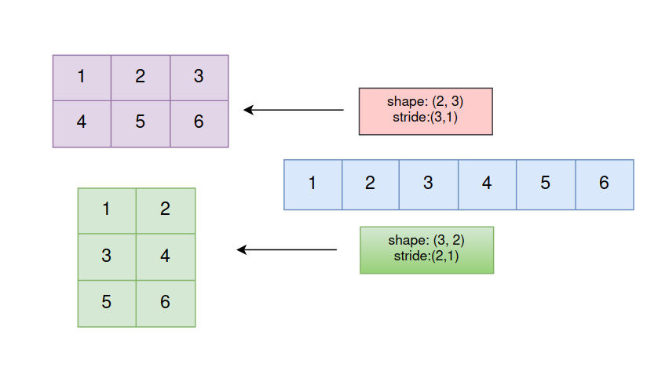
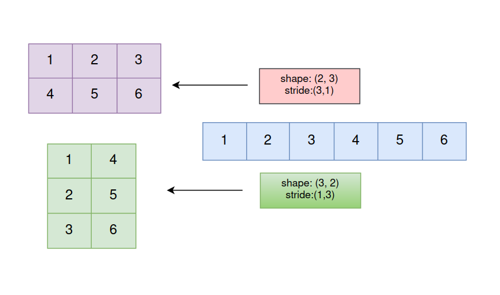

Tensor Layout¶
1. Tensor的layout属性¶
Pytorch的Tensor，我们经常使用。它有3个属性：torch.dtype，torch.device和torch.layout。前两个我们应该非常熟悉，那么什么是torch.layout呢？
1.1 基本概念与作用¶
- 定义：
torch.layout是一个用于表示torch.Tensor（张量）在物理内存中 数据布局/存储方式 的对象。 - 主要支持的布局类型：
torch.strided：用于密集张量（Dense Tensors），是 PyTorch 中最常用、最默认的内存布局。torch.sparse_coo：用于 COO（坐标格式）稀疏张量（Sparse COO Tensors），目前处于测试阶段（Beta support）。
本课程只关注密集张量，不考虑稀疏张量，所以下面的内容都是关于密集张量的。对稀疏张量感兴趣的同学可以自行搜寻相关资料。
1.2 核心机制：torch.strided 布局原理¶
1.2.1. 底层存储（torch.Storage）¶
每一个 strided 布局的张量，底层都关联着一个 torch.Storage 对象。所有实际的数据值都一维连续地保存在这个 Storage 中。
1.2.2. 多维步长视角（Strided View）¶
strided 张量本质上是为底层的连续存储（Storage）提供了一个 多维且带步长（Stride）的视图。
1.2.3. 步长的定义（Strides）¶
步长是一个整数列表/元组。第 k 维度的步长（k-th stride），代表在内存中从该维度的当前元素移动到下一个元素时，需要跨越（跳过）的底层元素个数。
1.2.4. 设计优势¶
这种基于步长和视角的机制，使得 PyTorch 能够极高效地执行许多张量操作（例如切片、转置、重塑形状等），只需修改步长元组或数据偏移量，而 无需在内存中重新复制或移动实际的数据。
2. 行优先和列优先存储¶
行优先（Row-major order） 和 列优先（Column-major order） 是计算机科学中用于描述 多维数组（矩阵）的数据在物理内存中如何一维平铺存储 的两种不同规则。
计算机的物理内存本质上是一个 一维连续的地址空间。当我们需要在内存里保存一个 M \times N 的二维矩阵（或者更高维的张量）时，必须按某种顺序将这些元素“拉直”成一条线。
以一个 2 \times 3 的二维矩阵为例：
2.1 行优先（Row-major Order）¶
- 核心定义：按行顺序 依次将元素平铺到内存中。先存第一行的所有元素，再存第二行的所有元素，以此类推。
- 内存布局： 在连续的物理内存中，元素的保存顺序为：
- 相邻特征：同一行中相邻列的元素（如 a_{0,0} 和 a_{0,1}）在物理内存里是紧挨着的。沿着最右侧/最后一个维度移动时，内存地址递增最快。
- 典型代表：
- 编程语言：C、C++、Python (NumPy 默认)、PyTorch (默认
strided)、Rust 等。
- 编程语言：C、C++、Python (NumPy 默认)、PyTorch (默认
2.2 列优先（Column-major Order）¶
- 核心定义：按列顺序 依次将元素平铺到内存中。先存第一列的所有元素，再存第二列的所有元素，以此类推。
- 内存布局： 在连续的物理内存中，元素的保存顺序为：
- 相邻特征：同一列中相邻行的元素（如 a_{0,0} 和 a_{1,0}）在物理内存里是紧挨着的。沿着最左侧/第一个维度移动时，内存地址递增最快。
- 典型代表：
- 编程语言/库：Fortran、MATLAB、R、Julia、LAPACK/BLAS 底层线性代数库。
2.3 步长视角（Stride Analysis）¶
从 PyTorch / NumPy 的步长（Stride）概念来看，可以更形象地理解两者的差异：
对于 Shape 为 (R, C) 的 2 \times 3 矩阵：
| 布局类型 | 步长（Stride） | 解释 |
|---|---|---|
| 行优先 | (3, 1) |
沿着列向右走 1 步，物理内存跨越 1 个元素；沿着行向下走 1 步，物理内存跨越 3（即一整行）个元素。 |
| 列优先 | (1, 2) |
沿着行向下走 1 步，物理内存跨越 1 个元素；沿着列向右走 1 步，物理内存跨越 2（即一整列）个元素。 |
2.4 为什么要关注行优先与列优先？¶
了解数据布局对于编写高性能程序至关重要，主要因为 CPU Cache（高速缓存） 的运作机制：
- 缓存行与局部性原理（Spatial Locality）： CPU 从内存读取数据时，不会只读 1 个字节，而是会一次性加载一整个“缓存行（Cache Line，通常为 64 字节）”及其相邻数据。
- 遍历性能差异：
- 在 C/C++/PyTorch（行优先）中，如果使用 按行遍历（外层循环行，内层循环列），CPU 读入 a_{0,0} 的同时会自动把 a_{0,1}, a_{0,2} 装入 Cache，命中率高，速度极快。
- 如果在行优先语言中 按列遍历（外层循环列，内层循环行），每次读取都会跨越整行跳转内存地址，导致频频引发缓存缺失（Cache Miss），大幅降低运行效率。
2.5 通用寻址公式¶
2.5.1 公式¶
对于一个 N 维张量，假设其各维度的多维逻辑下标为数组 \mathbf{idx} = [i_0, i_1, \dots, i_{N-1}]，对应的步长数组为 \mathbf{stride} = [s_0, s_1, \dots, s_{N-1}]，则该元素在物理一维存储（Storage）中的偏移量（Offset）公式为：
结合张量在内存中的起始首地址指针（Data Pointer），元素对应的 真实物理内存地址 为：
参数说明：
- i_k：张量在第 k 维的逻辑索引（满足 0 \le i_k < \text{shape}[k]）。
- s_k（即
stride[k]）：沿着第 k 维移动 1 个单位时，一维物理内存中需要跳过的元素个数。 - \text{itemsize}：单个数据类型占用的字节数（例如
float32为 4 字节，int64为 8 字节）。
2.5.2 实例演示¶
假设有一个 3D 张量，参数如下：
shape=(2, 3, 4)stride=(12, 4, 1)（行优先连续存储）
想要访问逻辑下标为 (1, 2, 3) 的元素，计算其物理一维索引：
即该元素位于物理一维数组的第 23 个位置（从 0 开始计数）。
3. 只修改shape和stride实现reshape¶
3.1 代码¶
首先是一个辅助函数，用于打印Tensor的信息：
def print_tensor(t):
print(f"{t.shape=}")
print(f"{t.stride()=}")
t_cpu = t.detach().cpu()
# 映射 NumPy dtype
np_dtype = torch.tensor([], dtype=t.dtype).numpy().dtype
# 直接使用 np.ctypeslib 从物理数据指针指针生成 NumPy 视图（零拷贝）
storage_np = np.ctypeslib.as_array(
(np.ctypeslib.ctypes.c_byte * t_cpu.untyped_storage().nbytes()).from_address(
t_cpu.data_ptr()
)
).view(np_dtype)
print(f"实际物理存储：{storage_np}")
print("逻辑视图：")
print(t)
def func1():
print("********如果Tensor是连续的，reshape可以不用改变物理存储*********")
t = torch.arange(6).reshape(2, 3)
print_tensor(t)
t = t.reshape(3, 2)
print("========reshape成(3, 2)之后==========")
print_tensor(t)
print()
执行的结果是：
********如果Tensor是连续的，reshape可以不用改变物理存储*********
t.shape=torch.Size([2, 3])
t.stride()=(3, 1)
实际物理存储：[0 1 2 3 4 5]
逻辑视图：
tensor([[0, 1, 2],
[3, 4, 5]])
========reshape成(3, 2)之后==========
t.shape=torch.Size([3, 2])
t.stride()=(2, 1)
实际物理存储：[0 1 2 3 4 5]
逻辑视图：
tensor([[0, 1],
[2, 3],
[4, 5]])
3.2 解释¶

我们结合上图，从底层机制到计算逻辑详细解释为什么 reshape（或 view）在内存连续的情况下 只需要修改 shape 和 stride，而完全不需要移动底层数据：
3.2.1 核心解耦：数据与视角的分离¶
图中中间蓝色的长条代表 底层物理内存（Storage），它是一块一维连续排列的物理空间，存储着数据：[1, 2, 3, 4, 5, 6]。
在 PyTorch 等深度学习框架中，Tensor 被设计为 元信息（Metadata）与真实存储（Storage）分离 的结构：
-
数据实体：物理内存里只管按顺序存这 6 个数字。
-
逻辑视角：Tensor 的
shape和stride决定了程序“如何把这一维数据解读为多维矩阵”。
只要物理数据的逻辑展开顺序与物理存储一致，reshape 就只是修改元信息，物理数据连位置都不用挪动。
3.2.2 图中两种视角的寻址逻辑分析¶
结合图片中的两个例子，看看仅靠 shape 和 stride 如何映射到同一个物理数组 [1, 2, 3, 4, 5, 6]：
3.2.2.1. 紫色视角：shape: (2, 3), stride: (3, 1)¶
- 逻辑视角：一个 2 行 3 列的矩阵。
- 寻址公式：定位元素 (i, j) 的物理偏移为 \text{offset} = i \times 3 + j \times 1。
- 第 0 行：(0,0) \to 1, (0,1) \to 2, (0,2) \to 3
- 第 1 行：(1,0) \to 4, (1,1) \to 5, (1,2) \to 6
- 结果：读取出来的平铺数据依然是
[1, 2, 3, 4, 5, 6]，与蓝色物理内存完全吻合！
3.2.2.2. 绿色视角：shape: (3, 2), stride: (2, 1)¶
- 逻辑视角：一个 3 行 2 列的矩阵。
- 寻址公式：定位元素 (i, j) 的物理偏移为 \text{offset} = i \times 2 + j \times 1。
- 第 0 行：(0,0) \to 1, (0,1) \to 2
- 第 1 行：(1,0) \to 3, (1,1) \to 4
- 第 2 行：(2,0) \to 5, (2,1) \to 6
- 结果：读取出来的平铺数据为
[1, 2, 3, 4, 5, 6]，与蓝色物理内存也完全吻合！
3.2.3 为什么只改 shape 和 stride 就能实现形态重塑？¶
-
总数据量不变（元素守恒）： 3 \times 2 = 6 个元素，2 \times 3 = 6 个元素，总元素数量与物理内存分配的空间一致。
-
逻辑展开顺序一致（连续性保证）： 无论把矩阵解读为 3 \times 2 还是 2 \times 3，在行优先（Row-major）规则下，按行读取元素得到的序列都是相同的
1 -> 2 -> 3 -> 4 -> 5 -> 6。 -
只需重写索引映射规则：
stride本质上就是寻址计算的“系数”。 将第一维步长从2改为3，CPU/GPU 在计算“下一行数据在内存中相隔几个位置”时，就会自动向后跳 3 个单元，从而直接在逻辑上拼装出全新的矩阵形状。
4. 只修改shape和stride实现transpose¶
4.1 代码¶
def func2():
print("********如果Tensor是连续的，transpose可以不用改变物理存储。*********")
t = torch.arange(6).reshape(2, 3)
print_tensor(t)
t = t.transpose(1, 0)
print("========transpose之后==========")
print_tensor(t)
print()
执行结果：
********如果Tensor是连续的，transpose可以不用改变物理存储。*********
t.shape=torch.Size([2, 3])
t.stride()=(3, 1)
实际物理存储：[0 1 2 3 4 5]
逻辑视图：
tensor([[0, 1, 2],
[3, 4, 5]])
========transpose之后==========
t.shape=torch.Size([3, 2])
t.stride()=(1, 3)
实际物理存储：[0 1 2 3 4 5]
逻辑视图：
tensor([[0, 3],
[1, 4],
[2, 5]])
4.2 解释¶

结合图中展现的物理存储与元信息对比，可以非常清晰地看出转置（transpose / .t()）实现零拷贝（Zero-Copy）的核心原理：
4.2.1 核心对比：底层数据不变，仅“交换维度元信息”¶
中间蓝色的长条是物理内存（Storage）中按顺序连续存放的数据：[1, 2, 3, 4, 5, 6]。
对比紫色矩阵（转置前）与绿色矩阵（转置后）的元信息：
- 转置前（紫色）：
shape:(2, 3)stride:(3, 1)
- 转置后（绿色）：
shape:(3, 2)（行数和列数对调）stride:(1, 3)（第 0 维与第 1 维的步长直接对调）
4.2.2 寻址公式推导：步长对调如何改变行列解读？¶
多维索引转换为物理内存一维偏移的通用公式为：
我们将 (i, j) 带入两个不同视角计算其在物理内存 [1, 2, 3, 4, 5, 6] 中的取值：
4.2.2.1. 紫色视角 shape: (2, 3), stride: (3, 1)¶
- 读取元素 (0, 1)（第 0 行第 1 列）：
- 读取元素 (1, 0)（第 1 行第 0 列）：
4.2.2.2. 绿色视角 shape: (3, 2), stride: (1, 3)¶
- 读取元素 (0, 1)（第 0 行第 1 列）：
（原先紫色矩阵的第 1 行第 0 列元素 4，现在变成了绿色矩阵的第 0 行第 1 列）
- 读取元素 (1, 0)（第 1 行第 0 列）：
（原先紫色矩阵的第 0 行第 1 列元素 2，现在变成了绿色矩阵的第 1 行第 0 列）
4.3 结论：为什么转置不需要移动数据？¶
-
几何变换等价于索引步幅对调： 转置的数学定义是将矩阵的行列互换，即原本“沿着列移动 1 步”变成“沿着行移动 1 步”。因此在计算物理地址时，只需 直接将
stride数组中的对应维度系数互换，计算出来的物理内存偏移量就天然满足转置后的矩阵对应关系。 -
物理数据依然按照原顺序排列： 绿色矩阵的第一行数据是
[1, 4]。读取1时取物理地址 0，读取4时取物理地址 3（跨越了 3 个单元，即stride[1] = 3）。系统只是按步长去不同的物理位置“抽取”数据，完全不需要在显存/内存中重新搬运并重新排列数据。 -
转置后的非连续状态： 这也完美解释了为什么转置后的 Tensor 不再连续（
is_contiguous() == False）：因为在绿色视角下，按行顺次读取数据1 -> 4 -> 2 -> 5 -> 3 -> 6时，访问物理内存的地址跳跃顺序是0 -> 3 -> 1 -> 4 -> 2 -> 5，不再是连续递增的0 -> 1 -> 2 -> 3 -> 4 -> 5。
5. 内存连续¶
5.1 基本概念¶
在 PyTorch 中，contiguous（内存连续） 是指 Tensor 中的元素在物理内存中的排列顺序，与按行优先（Row-major order）逻辑遍历该 Tensor 时的元素读取顺序完全一致。
简单的官方定义可以概括为：如果一个 Tensor 的元素在物理存储（Storage）中是依次相邻排列的，并且其逻辑多维索引遍历顺序与物理一维数组的偏移量递增顺序完全吻合，那么这个 Tensor 就是 Contiguous 的。
5.1.1 严格的数学定义¶
对于一个 N 维 Tensor，其形状（Shape）为 (d_0, d_1, \dots, d_{N-1})，步长（Stride）为 (s_0, s_1, \dots, s_{N-1})。
满足以下两个条件时，该 Tensor 被定义为 Contiguous：
- 最后一维连续：
- 高维步长为低维累乘（即每一维的步长等于其右侧所有维度大小的乘积）：
5.1.2 示例对比¶
以一个 2 \times 3 的矩阵在物理内存（一维 Storage）中的顺序为例：
5.1.2.1. 连续状态（Contiguous = True）¶
- 逻辑矩阵：
- 物理内存 Storage：
[1, 2, 3, 4, 5, 6] - 步长 Stride：
(3, 1) - 说明：按行逻辑遍历（1 \to 2 \to 3 \to 4 \to 5 \to 6），对应物理内存中的偏移量为
0 -> 1 -> 2 -> 3 -> 4 -> 5，依次连续递增 1，因此是 Contiguous 的。
5.1.2.2. 非连续状态（Contiguous = False，例如转置后）¶
如果对上面的矩阵进行转置（.t()），PyTorch 不会重新搬运物理内存，仅仅将 shape 改为 (3, 2)，stride 改为 (1, 3)：
- 逻辑矩阵：
- 物理内存 Storage：
[1, 2, 3, 4, 5, 6]（依然没变！） - 步长 Stride：
(1, 3) - 说明：按行逻辑遍历新的矩阵（1 \to 4 \to 2 \to 5 \to 3 \to 6），访问物理内存时的地址跳跃顺序变成了
0 -> 3 -> 1 -> 4 -> 2 -> 5。物理地址发生了跳跃而不是按顺序连续递增，因此变成了 Non-contiguous。
5.1.3 为什么 PyTorch 要区分是否 Contiguous？¶
- 硬件性能（C/C++ 与 CUDA 加速）： CUDA 算子和底层 C++ 代码在进行高效向量化计算（如 SIMD/Tensor Core 访问）时，依赖连续的内存指针直接按顺序读取数据。如果内存不连续，底层算法就无法进行合并内存访问（Coalesced Access）。
- 底层 API 限制（如
view()）：tensor.view()要求必须在不改变物理内存的基础上重塑形状，这依赖于内存连续性。如果在非连续 Tensor 上直接调用.view()，PyTorch 会报错RuntimeError: input is not contiguous，要求先调用.contiguous()。
5.1.4 如何使 Tensor 恢复连续？¶
通过调用 .contiguous() 方法：
- 如果 Tensor 已经是连续的：不会发生任何操作，直接返回原 Tensor（零开销）。
- 如果 Tensor 是非连续的：PyTorch 会在物理内存中重新申请一块全新的连续空间，并将数据按照当前的逻辑顺序深拷贝（Copy）过去，使新 Tensor 的
is_contiguous()变为True。
5.2 代码¶
def check_contiguous_manual(t):
shape = t.shape
stride = t.stride()
# 从最后一维往前倒推验证
expected_stride = 1
for i in range(len(shape) - 1, -1, -1):
# 如果维度大小为 1，该维度的 stride 不影响连续性，可跳过
if shape[i] == 1:
continue
if stride[i] != expected_stride:
return False
expected_stride *= shape[i]
return True
def func3():
print("********转置后张量不再连续*********")
t = torch.arange(6).reshape(2, 3)
print_tensor(t)
print("--------用pytorch方法判断是否连续---------")
print(f"{t.is_contiguous()=}")
print("~~~~~~~~用自己写的方法判断是否练习~~~~~~~~~")
print(f"{check_contiguous_manual(t)=}")
t = t.transpose(1, 0)
print("========transpose之后==========")
print_tensor(t)
print("--------用pytorch方法判断是否连续---------")
print(f"{t.is_contiguous()=}")
print("~~~~~~~~用自己写的方法判断是否练习~~~~~~~~~")
print(f"{check_contiguous_manual(t)=}")
print()
执行结果：
********转置后张量不再连续*********
t.shape=torch.Size([2, 3])
t.stride()=(3, 1)
实际物理存储：[0 1 2 3 4 5]
逻辑视图：
tensor([[0, 1, 2],
[3, 4, 5]])
--------用pytorch方法判断是否连续---------
t.is_contiguous()=True
~~~~~~~~用自己写的方法判断是否练习~~~~~~~~~
check_contiguous_manual(t)=True
========transpose之后==========
t.shape=torch.Size([3, 2])
t.stride()=(1, 3)
实际物理存储：[0 1 2 3 4 5]
逻辑视图：
tensor([[0, 3],
[1, 4],
[2, 5]])
--------用pytorch方法判断是否连续---------
t.is_contiguous()=False
~~~~~~~~用自己写的方法判断是否练习~~~~~~~~~
check_contiguous_manual(t)=False
6. 不连续张量的view和reshape¶
6.1 代码¶
def func4():
print("********不连续的张量不能view，可以reshape，但是需要移动数据*********")
t = torch.arange(6).reshape(2, 3)
t = t.transpose(1, 0)
print_tensor(t)
try:
# 非连续张量调用 view 会抛出 RuntimeError
t.view(2, 3)
except RuntimeError as e:
print("\n捕获到预期异常：")
print(f"异常类型: {type(e).__name__}")
print(f"异常信息: {e}")
t = t.reshape(2, 3)
print("========不连续张量reshape之后==========")
print_tensor(t)
print()
结果：
********不连续的张量不能view，可以reshape，但是需要移动数据*********
t.shape=torch.Size([3, 2])
t.stride()=(1, 3)
实际物理存储：[0 1 2 3 4 5]
逻辑视图：
tensor([[0, 3],
[1, 4],
[2, 5]])
捕获到预期异常：
异常类型: RuntimeError
异常信息: view size is not compatible with input tensor's size and stride (at least one dimension spans across two contiguous subspaces). Use .reshape(...) instead.
========不连续张量reshape之后==========
t.shape=torch.Size([2, 3])
t.stride()=(3, 1)
实际物理存储：[0 3 1 4 2 5]
逻辑视图：
tensor([[0, 3, 1],
[4, 2, 5]])
6.2 解释¶
本段代码通过具体的实验演示了 PyTorch 中 非连续（Non-contiguous）张量在调用 view() 与 reshape() 时的底层机制差异。
6.2.1. 产生非连续张量（transpose 操作）¶
t = torch.arange(6).reshape(2, 3)：初始张量按顺序填充，物理存储为[0, 1, 2, 3, 4, 5]，属于连续张量（stride=(3, 1)）。t = t.transpose(1, 0)：对张量进行转置，仅交换了维度元信息（shape变为(3, 2)，stride变为(1, 3)），物理存储数据并未搬运。- 状态：此时逻辑视图按行读取顺序为
0 -> 3 -> 1 -> 4 -> 2 -> 5，在物理内存中对应的访问地址跳跃为0 -> 3 -> 1 -> 4 -> 2 -> 5，不再连续递增，因此t.is_contiguous()为False。
6.2.2. view() 的局限性：无法在非连续数据上执行¶
- 执行
t.view(2, 3)时，PyTorch 会尝试在不移动物理数据（Zero-Copy）的前提下重塑形状。 - 由于
t当前是非连续的，物理内存中的数据排列无法通过简单的步长计算映射为全新的 (2, 3) 形状，因此 PyTorch 拒绝执行并抛出RuntimeError。 - 结论：
view()只能用于物理内存连续的张量。
6.2.3. reshape() 的自适应处理：自动深拷贝（Memory Copy）¶
- 当对非连续张量调用
t.reshape(2, 3)时，PyTorch 检测到当前张量非连续，因此 会自动触发一次内存深拷贝（深层等价于t.contiguous().view(2, 3)）。 - 从运行结果的物理存储变化可以清晰看出：
- Reshape 前物理存储：
[0, 1, 2, 3, 4, 5]（原始转置前的排列） - Reshape 后物理存储：
[0, 3, 1, 4, 2, 5]（新开辟了一块物理内存，将转置后的逻辑数据按行重新连续存放）
- Reshape 前物理存储：
- 重新拷贝后，新张量的
stride重置为连续步长(3, 1)，逻辑视图为[[0, 3, 1], [4, 2, 5]]。
6.2.4. 总结¶
view()：必须作用于连续张量，严格保持 O(1) 的零拷贝性能；遇到非连续张量直接报错。reshape()：更具兼容性，连续时等价于view()（零拷贝），非连续时自动深拷贝并重新排列物理存储，确保返回符合期望形状的新张量。
7. 一些非连续张量的场景¶
通常，我们希望我们的Tensor是连续的，但是有时我们会遇到非连续的情况，前面的transpose是一个常见的场景，下面再介绍一些其它的非连续场景。
7.1 零拷贝切片¶
7.1.1 代码¶
def is_same_storage(x, y):
return x.untyped_storage().data_ptr() == y.untyped_storage().data_ptr()
def func5():
print("********切片会产生不连续张量*********")
t = torch.arange(6).reshape(2, 3)
print_tensor(t)
s1 = t[:, :2]
print("=============s1 = t[:, :2]====================")
print_tensor(s1)
print(f"{is_same_storage(t, s1)=}")
s2 = t[:, 1:]
print("=============s1 = t[:, 1:]====================")
print_tensor(s2)
print(f"{is_same_storage(t, s2)=}")
print()
func5()
执行结果：
********切片会产生不连续张量*********
t.shape=torch.Size([2, 3])
t.stride()=(3, 1)
实际物理存储：[0 1 2 3 4 5]
逻辑视图：
tensor([[0, 1, 2],
[3, 4, 5]])
=============s1 = t[:, :2]====================
t.shape=torch.Size([2, 2])
t.stride()=(3, 1)
实际物理存储：[0 1 2 3 4 5]
逻辑视图：
tensor([[0, 1],
[3, 4]])
is_same_storage(t, s1)=True
=============s1 = t[:, 1:]====================
t.shape=torch.Size([2, 2])
t.stride()=(3, 1)
实际物理存储：[1 2 3 4 5 0]
逻辑视图：
tensor([[1, 2],
[4, 5]])
is_same_storage(t, s2)=True
7.1.2 为什么s2和t使用相同的物理存储但是打印出来不同？¶
s2 和 t 共享的完全是同一个物理 Storage，底层的 6 个字节/数字根本没有被复制或重新排列；之所以打印出来的“物理存储”看起来不一样，是因为 print_tensor 函数是从 s2.data_ptr()（即 s2 的首地址偏移处）开始读取物理内存的。
7.1.2.1 两个概念的区别：Storage Pointer vs Data Pointer¶
在 PyTorch 的底层 C++ 实现中，一个 Tensor 内部包含两个核心指针：
storage().data_ptr()（Storage 起始地址）：指向这块物理内存分配的最开头（即元素0所在的位置）。data_ptr()（Tensor 数据起始地址）：指向当前 Tensor 的逻辑元素 (0, 0, \dots, 0) 在物理内存中的起始位置。
7.1.2.2 图解与偏移量分析¶
假设原始张量 t 分配了一块包含 [0, 1, 2, 3, 4, 5] 的物理内存（Storage Address 从 0x00 开始）：
1. 原始张量 t = torch.arange(6).reshape(2, 3)¶
- 物理内存：
[0, 1, 2, 3, 4, 5] data_ptr()：指向0（偏移量 Offset = 0）shape/stride：(2, 3)/(3, 1)
2. 切片 s1 = t[:, :2]¶
- 取第 0、1 列。
s1的逻辑首元素是0（位于行 0，列 0）。 data_ptr()：依然指向0（偏移量 Offset = 0）。shape/stride：(2, 2)/(3, 1)。- 寻址读取：
- 第 0 行：Offset 0 \times 3 + 0 \times 1 = 0 \implies \text{读到 } 0；Offset 0 \times 3 + 1 \times 1 = 1 \implies \text{读到 } 1
- 第 1 行：Offset 1 \times 3 + 0 \times 1 = 3 \implies \text{读到 } 3；Offset 1 \times 3 + 1 \times 1 = 4 \implies \text{读到 } 4
- 为什么非连续（Non-contiguous）？ 因为读取顺序是 0 \to 1 \to 3 \to 4，在物理地址跳过了 2！
- 物理打印：从
s1.data_ptr()（位置 0）开始连续读取 6 个元素，所以依然显示为[0, 1, 2, 3, 4, 5]。
3. 切片 s2 = t[:, 1:]¶
- 取第 1、2 列。
s2的逻辑首元素是1（位于行 0，列 1）。 data_ptr()：指向了物理内存中的1（偏移量 Offset = 1，地址变成了0x00 + 1 * itemsize）！shape/stride：(2, 2)/(3, 1)。- 寻址读取（相对于
s2.data_ptr()偏移）：- 第 0 行：相对 Offset 0 \times 3 + 0 \times 1 = 0 \implies \text{读到 } 1；相对 Offset 0 \times 3 + 1 \times 1 = 1 \implies \text{读到 } 2
- 第 1 行：相对 Offset 1 \times 3 + 0 \times 1 = 3 \implies \text{读到 } 4；相对 Offset 1 \times 3 + 1 \times 1 = 4 \implies \text{读到 } 5
- 为什么打印出
[1, 2, 3, 4, 5, 0]？- 在的
print_tensor函数中（假设使用了data_ptr()+ctypes的方式），是以s2.data_ptr()（即1所在的位置） 作为起点，向后读取了 6 个元素的内存区间。 - 物理内存从
1的位置向后读 5 个元素，依次是：1, 2, 3, 4, 5。 - 第 6 个元素超出了
s2逻辑视角的范围，读取到了物理内存缓冲区之外的垃圾数据，只不过恰好是0而已，如果多跑几次，可能不是0。
- 在的
7.1.3 总结与验证代码¶
s2和t为什么共享存储？ 因为s2没有发生内存拷贝，它的物理数据依然保存在t的那块 Storage 里，只是s2.storage_offset()变成了1（逻辑起点往后移了 1 个位置）。- 验证物理地址完全一致：
同学们可以打印它们的 Storage 物理首地址，它们是 100% 相同的：
# 两者的 Storage 物理缓冲区首地址完全相同
print(t.untyped_storage().data_ptr() == s2.untyped_storage().data_ptr()) # True
# 只是 Tensor 的数据起始指针不同（s2 偏移了 1 个元素）
print(s2.data_ptr() - t.data_ptr()) # 8 字节（int64）
print(s2.storage_offset()) # 1
7.2 硬性对齐¶
在 GPU 高性能计算与 CUDA 编程中，硬性对齐（Memory Alignment / Pitch Alignment） 是决定显存读取效率的核心机制之一。它与 PyTorch 中出现“非连续（Non-contiguous）Tensor”有着紧密的底层物理关联。
7.2.1 什么是 CUDA 库的硬性对齐（Pitch / Stride）？¶
GPU 的显存控制器（Memory Controller）在读取 GPU 显存（DRAM）时，并不是按单个字节或单个元素逐个读取的，而是以 32 字节、64 字节或 128 字节 为单位的“内存块（Memory Segment）”进行批量吞吐。
- 如果数据的物理起始地址是 128 字节的整数倍（对齐），一个 Warp（32 个线程）并发读取数据时，只需要 1 次显存事务（Memory Transaction） 就能拿走所有数据。
- 如果地址没有对齐，原本 1 次就能读完的数据会被切碎在两个不同的内存块中，导致触发 2 次或多次显存事务，显存带宽利用率直接砍半。
7.2.2 二维/多维内存的硬性对齐（Pitch / Stride）¶
当我们在 GPU 中分配二维矩阵显存时，矩阵每一行的列数（以字节为单位）不一定刚好是 128 字节的倍数。
为了保证 矩阵的“每一行开头”都严格对齐到硬件要求的内存边界，CUDA 提供了 cudaMallocPitch API。它会在矩阵每一行的末尾 自动填充（Padding）一些无用的空白字节，使得每一行占用的物理字节数（称为 Pitch 或 Memory Stride）凑满对齐边界。
Width（逻辑宽度）：用户矩阵真正包含数据的列数（例如 100 个float32元素，逻辑宽度为 400 字节）。Pitch（物理步长）：CUDA 硬性填充后的实际物理行宽（例如硬性对齐到 512 字节）。Padding（填充字节）：\text{Padding} = \text{Pitch} - \text{Width}（多出来的 112 字节不包含有效数据，仅用于填充对齐）。
7.2.3 硬性对齐示例¶
假设有一个 2 \times 3 的 float32 矩阵（每个 float 占 4 字节）：
- 逻辑有效数据：每行 3 个元素 = 3 \times 4 = 12 字节。
- CUDA 硬件对齐要求：假设当前硬件强制按 32 字节对齐。
- 分配结果：
- CUDA 会将
Pitch设为 32 字节（行间距）。 - 第一行占物理内存
[0~11]字节（数据），[12~31]字节被空白填充（Padding）。 - 第二行从物理内存第 32 字节开始存放。
- CUDA 会将
物理内存布局：
- 逻辑遍历顺序：1 \to 2 \to 3 \to 4 \to 5 \to 6
- 物理偏移量跳跃：0 \to 4 \to 8 \to 32 \to 36 \to 40（从 8 字节直接跳到了 32 字节，跳过了填充区）
- 结果：此时 Tensor 的
stride[0] = 8（以元素数计算，即 32 / 4），而不是逻辑列数3。因为物理存储中间有“空洞”，按行优先物理遍历时地址不连续递增，该 Tensor 在硬件意义上是非连续的。